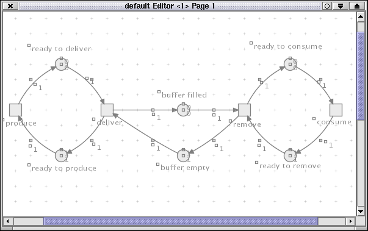

The Petri Net Kernel (PNK) version 2.0 provides an infrastrucure for building Petri net tools.
Copyright (C) 2001 Petri Net Kernel Team (Humboldt-University Berlin, Germany)
pnk@informatik.hu-berlin.deThe PNK version 2.0 is free software; you can redistribute it and/or modify it under the terms of the GNU Library General Public License (see file LICENSE.GNU-LGPL) as published by the Free Software Foundation; version 2 of the license. (Note, that some PNK applications are developed under GNU General Public License---see file http://www.gnu.org/copyleft/gpl.html ) The PNK is distributed in the hope that it will be useful, but WITHOUT ANY WARRANTY.
You are NOT ALLOWED to CHANGE THE ORIGINAL COPYRIGHT NOTICE. See the GNU Library General Public License for more details. You should have received a copy of the GNU Library General Public License along with the PNK; if not see http://www.gnu.org/. An application using the Petri Net Kernel MUST GIVE NOTICE OF THIS USE. Please contact pnk@informatik.hu-berlin.de to notify this application.
This is just a crash course to get the Petrinet Kernel running. It should give you an overview how to use the Petrinet Kernel. I'm leaving out some important details which will be added soon ...
NOTE: It is important that you have installed the jdk1.2.2 to use
the Petrinet Kernel. Otherwise download it from java.sun.com.
If you don't know which jdk version is installed on your system, you
may check this by calling the Java interpreter's -version
option.
java -version
Download the latest PNK2alpha.jar file. Extract the archive on the command line by typing
jar xvf PNK2alpha.jar
This creates a new directory PNK2/ containing the source and class files of the Petrinet Kernel. Now you may change to PNK2/ directory
cd PNK2
and take a look at it's contents. You should find something like this ...
jaxp.jar - api for reading and writing xml files
crimson.jar - api for reading and writing xml files
PNK2.jar - archive of the Petrinet Kernel's class files
PNK2sources.jar - archive of the Petrinet Kernel's source files
Makefile - with this you may compile sources by hand
sampleNets - contains some saved netexamples
netTypeSpecifications - contains examples for a net's specification
toolSpecification - contains some toolspecification examples
icons - icons used by applications
license
Then start up Petrinet Kernel using the -jar option
of the java interpreter.
java -jar PNK2.jar
You may also compile sources by hand. Therefore you possibly have to extract a source file archive.
jar xvf PNK2sources.jar
This command installs a directory tree of source files. Now take notice of the makefile in the PNK2/ root directory. Modify it to your requirements and enter
make run
This command should compile all files and run the Petrinet Kernel. If it does not, please check the path to your java2 interpreter and java2 compiler. You may edit the path in the headline of the makefile. Verify also the correctness of the CLASSPATH variable. It should at least point to the crimson.jar and jaxp.jar archives distributed with the pnk.jar archive. These two file archives are necessary for loading and writing xml and pnml files.
At first change into the directory where you placed the downloaded
PNK2alpha.jar file. Extract the file and examine the
contents of the new directory. Finally run the Petrinet Kernel using
the -jar option supported by the java2 interpreter.
If the makefile doesn't work you may generally start the Petrinet Kernel by typing a commandline like this:
java -classpath .:jaxp.jar:crimson.jar
de.huberlin.informatik.pnk.appControl.ApplicationControl
In this case it is important that you are currently in the root directory of the Petrinet Kernel. First steps - Open, Edit and Save Nets
Now I will give you a short tutorial how you can play around with the Petrinet Kernel. In this section I tell you how you may open or edit nets and how you may invoke applications to work on your net. When launching the Petrinet Kernel the ApplicationControl's window should appear.
In the ApplicationControl's menubar you find a File menu
for opening existing nets, creating new nets and saving nets. There
should also be a Net menu to launch applications related to
a specific net and switch between them. At first you have to choose
your nettype. You may open the File menu. If you select the
File -> new Net menuentry a submenu with a list of
different nettypes appears. Click on one of these menuitems. You can
also select the File -> Open menuentry to open an
existing net. Some interesting netexamples are stored in the
sampleNets/ directory.
By default a editor start's to display the net. Everytime you invoke an application it's menu is shown in the ApplicationControl's menubar. So now you should find there the editor's menu. Alternatively you may use the popupmenu of the editor.

Probable you ask: 'How can I add objects like places, transitions
and arcs to the net?' In the editor's menu you select the Place
checkbox or the Transition checkbox. Then click on an open
editorpage. Every mouseclick should create a new object. Then choose
the Arc checkbox and mouseclick on a place. The place should
change it's color indicating that it is selected as an arc's
initialnode. Now mouseclick a transition and a new arc appears. You
may want to drag around some places and transitions to make your net
look lovely. You achieve this by mouseclicking in an object and hold
the mousebutton pressed while moving your mouse. After this you
usually want edit the extensions of some objects. For example set the
name and marking of places, the
inscriptions of several arcs or the guards
of transition. Which of these extensions exists depends on the
nettype. To edit an extension you choose the Edit checkbox
in editor's popupmenu. Now a mouseclick on a place, transition or arc
will open a dialog frame where you may set new values for the objects
extensions.
You can open a second page using the editor's menu in the ApplicationControl's menubar. If you enable the join checkbox you may join two different nodes as one node. That's the way you merge the pages. Therefore you click in a place and it should change it's color than click into another place. Now these places represent both the same place of the net. You can undo this with the help of the split operation. Then it is recommended that you save your net with the File -> save or File -> save as menu and choose ApplicationControl's Net menu to start a further application for example a simulator.
Choose Net -> Start Application -> Simulator. This creates a new instance of the simulator. Now the simulator's menu should appear in the ApplicationControl's menubar. Please pay attention to the fact that some applications (for example the simulator) are not automatically launched when they were invoked. To run the simulator choose the Simulator -> Start menu from ApplicationControl's menubar. You should now see a dialog frame with a CANCEL button, pushing this button will abort the simulator application. If there is any concessioned transition in the net the simulator will emphasize it in the editor. You may fire a concessioned transition by mouseclicking into it. Continue these steps until you are tired or there is no concessioned transition anymore. In the first case press the CANCEL button in the simulator's dialog frame. (It is recommended that you don't choose Simulator -> Stop from ApplicationControl's menubar, because it's not yet correctly implemented.) In the last case the simulator stops automatically.
Now I want to introduce you in some details so that you are able to develop your own petrinet application using the Petrinet Kernel. The Petrinet Kernel's sources are a bunch of packages. These are ...
de.huberlin.informatik.pnk.kernel
de.huberlin.informatik.pnk.kernel.base
de.huberlin.informatik.pnk.app
de.huberlin.informatik.pnk.app.base
de.huberlin.informatik.pnk.appControl
de.huberlin.informatik.pnk.appControl.base
de.huberlin.informatik.pnk.netElementExtensions
de.huberlin.informatik.pnk.netElementExtensions.base
de.huberlin.informatik.pnk.editor
de.huberlin.informatik.pnk.exceptions
The idea of the Petrinet Kernel project is to make a petrinet data structure available for developers and scientists. We decided to add an editor to the project to remove this task from developers. And finally we created the ApplicationControl with should make it easy to compose nets and applications to one large application.
In the following I will say something about the mainpackages and mainclasses.
The de.huberlin.informatik.pnk.kernel's package
contains especially the following important classes:
Net
Arc
Place
Transition
Extension
Specification
A petrinet is a bipartitioned, directed graph with nodes called places and transitions.
For the beginning I list the methods of these classes and try to explain their meaning. Then I will discuss their use by an example.
The Net class describes a petrinet. It has methods to
access their arcs, places and transitions. Or you may ask a net for
it's FiringRule object that describes when a transition
is concessioned and how you does it fire. How do you may profite from
these methods you will see in the Example Simulator chapter.
public final class Net extends Graph {
public Vector getArcs()
public Vector getPlaces()
public Vector getTransitions()
public FiringRule getFiringRule()
} // class Net
The Place class describes a place of a petrinet. You
create a place using the class constructor. The place registers
itself in the net which must be passed as a constructor's parameter.
You can remove a place by calling it's delete() method.
You may request the current marking and so on ...
public final class Place extends Node
public Place(Net net, String name, Object initiator)
public void delete(Object initiator)
public Marking getMarking()
public void setMarkingAsInitial()
} // class Place
The Transition class describes a transition of a
petrinet. You create a transition using the class constructor. The
transition registers itself in the net which must be passed as a
constructor's parameter. You delete it using it's delete()
method. You can also request the mode of a transition.
public final class Transition extends Node {
public Transition(Net net, String name, Object initiator)
public void delete(Object initiator)
public Mode getMode()
} // class Transition
The Arc class describes an arc of a petrinet. You create
a new arc using the class constructor. The arc registers itself in
the net passed as constructor parameter. You may ask an arc for it's
initialnode, it's targetnode, it's inscription and so on ...
public class Arc extends Edge {
public Arc(Net net, Node source, Node target, Object initiator)
public Inscription getInscription()
public Place getPlace()
public Transition getTransition()
/// METHODS INHERITED FROM class Edge:
public Node getSource()
public Node getTarget()
} // class Arc
As you already notice the ApplicationControl in the
de.huberlin.informatik.pnk.appControl package plays an
very important role. This class manages all nets and applications of
the Petrinet Kernel. The ApplicationControl parses some XML files for
configuration. These are for example the specification of all
nettypes in the netTypeSpecification directory or a list of
valid applications to each nettype in toolSpecification.xml
file. Furthermore it is responsible for loading and writing nets as
PNML files. It also offers useful interfaces that lets different
applications cooperate with each other. Using the main main()
method of the ApplicationControl you launch the Petrinet Kernel on
commandline.
java -classpath .:crimson.jar:jaxp.jar \
de.huberlin.informatik.pnk.appControl.ApplicationControl \
toolSpecifications/toolSpecification.xml
Of course you have to specify the classpath correctly. Optional you may give the location of an toolSpecification.xml file as argument. If you don't the ApplicationControl uses toolSpecifications/toolSpecification.xml as default. With the toolSpecification.xml file you inform the ApplicationControl of known nettypes and applications. The idea is to give you the possibility to compose your own toolsets. This for example could be the content of toolSpecifications/toolSpecification.xml :
< ?xml version="1.0" encoding="UTF-8"? >
< !DOCTYPE toolSpecification SYSTEM "toolSpecification.dtd" >
< toolSpecification >
< !-- Nettypes -- >
< nettype id="n1" typeSpecification="file:netTypeSpecifications/simpleHLNet.xml"/ >
< nettype id="n2" typeSpecification="file:netTypeSpecifications/dawnNet.xml"/ >
< nettype id="n3" typeSpecification="file:netTypeSpecifications/Echo.xml"/ >
< !-- Applications -- >
< application id="a1" mainClass="de.huberlin.informatik.pnk.editor.Editor" maxinstances="inf" >
< allowedNettypes >
< ntref ref="n1"/ >
< ntref ref="n2"/ >
< ntref ref="n3"/ >
< /allowedNettypes >
< /application >
< !-- Input / Output -- >
< format id="pnml" ioClass="de.huberlin.informatik.pnk.appControl.PnmlInOut" >
< allowedNettypes >
< ntref ref="n1"/ >
< ntref ref="n2"/ >
< /allowedNettypes >
< /format >
< format id="io" ioClass="de.huberlin.informatik.pnk.appControl.InOut" >
< /format >
< !-- default settings -- >
< standardNettype ref="n1"/ >
< standardApplication ref="a1"/ >
< standardFormat ref="pnml"/ >
< /toolSpecification >
You see that the toolspecificationfile is structured in three parts. The first part declares the nettypes, the second part lists the applications with references to nettypes and the third part defines Input/Output formats (in this case PNML). For each application you may list the allowed nettypes. If you drop the < allowedNettypes > tag, it is supposed that all nettypes are tolerated. If the < allowedNettypes > tag is found but it's empty, it is supposed that no nettype is allowed.
If you open a net it is by
default displayed in an editor. The editor application resists in the
de.huberlin.informatik.pnk.editor package. I presume
that you never need to access it directly. To let your application
work with an editor it is recommended to use the offered interface
ApplicationNetDialog. Nevertheless you may look at the
editor's implementation to learn how to combine complex applications
and the ApplicationControl.
Now I will give you a short introduction how to write an application by discussing the implementation of a simulator.
Now let's take a look at the Simulator application in the
de.huberlin.informatik.pnk.app package. This example
should show how easy it is to write an application.
package de.huberlin.informatik.pnk.app;
import de.huberlin.informatik.pnk.app.base.MetaApplication;
import de.huberlin.informatik.pnk.appControl.ApplicationControl;
import de.huberlin.informatik.pnk.netElementExtensions.llNet.SimpleRule;
/**
* Simulator.java
*
* Created: Wed Jan 24 08:51:50 2001
*
* @author hohberg
* @version
*/
public class Simulator extends MetaApplication {
// this application's name
public static String staticAppName = "Simulator";
// class constructor
public Simulator(ApplicationControl ac) {
super(ac);
}
public void run() {
SimpleRule rule =
(SimpleRule) net.getExtension("firingRule");
rule.simulateWithUserInteraction(this);
}
} // Simulator
The Simulator extends the MetaApplication class.
public class Simulator extends MetaApplication
Every application has to extend this class to inherit important base
functionality. The class constructor has to take an
ApplicationControl object as parameter and propagate it
with the super() call to the MetaApplication's
class constructor.
public Simulator(ApplicationControl ac) {
super(ac);
}
The application may define it's name in a static class field
staticAppName so the ApplicationControl can display the
application's name in it's menubar.
public static String staticAppName = "Simulator";
The application then implements a run() method. This
method is called by the ApplicationControl to start the application.
public void run() {
After this the Simulator requests a net's extension using the net
field inherited from the MetaApplication class.
SimpleRule rule = (SimpleRule) net.getExtension("firingRule");
rule.simulateWithUserInteraction(this);
The SimpleRule class implements the interface
de.huberlin.informatik.pnk.netElementExtensions.base.FiringRule.
This interface defines methods like:
void fire(Vector transitions); // Fires some transitions
Vector getAllConcessioned(); // returns a list of concessioned transitions
Transition getConcessioned(); // returns only one concessioned transition
boolean isConcessioned(Transition t); // checks if a transition is concessioned
The SimpleRule object is nettype specific and has to
be implemented with the nettype. How to create new nettypes will be
discussed in a later section. Furthermore the method
simulateWithUserInteraction(MetaApplication app) is
declared in the SimpleRule class. It is implemented as:
public class SimpleRule extends FiringRule {
...
public void simulateWithUserInteraction(MetaApplication app) {
checkContextAndParseExtensions();
ApplicationControl ac = app.getApplicationControl();
Net net = (Net) getGraph();
Vector concessioned = getAllConcessioned( ); //all concessioned transitions
if(conc == null || conc.isEmpty())
return;
Transition transition = (Transition)
(new SelectObjectAction(ac, net, app, concessioned)).invokeAction();
while(transition != null) {
fire(transition);
concessioned = getAllConcessioned();
if(concessioned == null || concessioned.isEmpty())
return;
transition = (Transition)
(new SelectObjectAction(ac, net, app, concessioned)).invokeAction();
}
}
...
} // class SimpleRule
The implementation of this simulateWithUserInteraction() method is interesting in many aspects. Especially you see the use of the FiringRule interface. Farther you see how applications communicate with each other.
For short I want to introduce the Petrinet Kernel's concept of
communication between applications. The Editor for example implements
the ApplicationNetDialog interface in
de.huberlin.informatik.pnk.app.base package. This
interface serves a couple of nice methods. With the help of these
methods an application may request the editor to emphasize, select or
annotate a place, transition or arc.
package de.huberlin.informatik.pnk.app.base;
import de.huberlin.informatik.pnk.kernel.*;
import java.util.*;
/*
* If an application want's to request the editor
* to emphasize, annotate or select (one object | some objects),
* it may use the methods of this interface.
*/
public interface ApplicationNetDialog {
// The application requests the editor to annotate some objects.
public void anotateObjects(Hashtable annotations);
// The application requests the editor to emphasize some objects.
public void emphasizeObjects(Vector objects);
// The application requests the editor to reset all annotations.
public void resetAnnotations();
// The application requests the editor to unemphasize all objects.
public void resetEmphasize();
// The application requests the editor to select an object.
public Member selectObject(Vector objects);
// The application requests the editor to select some objects...
public Vector selectObjects(Vector objects);
// The application requests the editor to unannotate the objects.
public void unAnotateObjects(Vector objects);
// The application requests the editor to unEmphasize the objects.
public void unEmphasizeObjects(Vector objects);
} //interface ApplicationNetDialog
Communication is realized with the help of ActionObjects. The
following examples of ActionObjects reside in
de.huberlin.informatik.pnk.app.base
AnnotateObjectsAction // Requests to annotate object
ResetAnnotationsAction //
UnAnnotateObjectsAction //
SelectObjectAction // Requests to select an object
ResetEmphasizeAction //
SelectObjectsAction // Requests to select a collection of objects
EmphasizeObjectsAction // Requests to emphasize a collection of objects
UnEmphasizeObjectsAction
An application can initialize an ActionObject giving a reference
of the ApplicationControl that should find a suitable request
executer application and a reference of the net this application
currently processes and calls the ActionObject's invokeAction()
method.
/**
* I presume that an MetaApplication 'app' requests the ApplicationControl 'ac'
* to instruct another MetaApplication (that implements the 'ApplicationNetDialog' interface)
* to select a transition from the java.util.Vector 'concessioned'.
*/
Net net; // net the transitions belong to
Vector concessioned; // one of these transitions should be selected
MetaApplication app; // application that initiates the request
ApplicationControl ac; // applicationcontrol that routes the request
Transition transition = (Transition)
(new SelectObjectAction(ac, net, app, concessioned)).invokeAction();
This example starts a SelectObject request. It returns a
transition of the list of concessioned transitions
passed as argument to the constructor. The ApplicationControl now
searches for an application that handles this request. The request
executer application is supposed to be an editor which asks the user
to select a transition. Then the editor returns a transition chosen
by the user. For a better understanding we discuss the implementation
of the EmphasizeObjectsAction which request to emphasize some
netobjects like Arcs, Places or Transitions.
package de.huberlin.informatik.pnk.app.base;
import java.util.Vector;
import de.huberlin.informatik.pnk.kernel.*;
import de.huberlin.informatik.pnk.appControl.*;
/**
* EmphasizeObjectsAction.java
*
* An application working on a net may emphasize
* some netobjects (for example Places or Transitions)
* using this ActionObject. The application specifies an
* ApplicationControl. This tries to find another application as target
* to perform the emphasize request. Therefore the ApplciationControl
* checks if the targetapplication works on the same net and
* implements the necessary interface.
*
* @author: gruenewa
*/
public class EmphasizeObjectsAction extends MetaActionObject {
/*
* A list of objects that should be emphasized by
* an application for example an editor
*/
Vector emphasizeObjects = null;
/**
* Creates a new EmphasizeObjectsAction instance.
*
* @param ac an ApplicationControl the AC which should find a targetapplication
* @param net a Graph the graph/net the targetapplication currently processes
* @param initiator a MetaApplication initiator of this request
* @param emphasizeObjects a Vector parameters for the request
*/
public EmphasizeObjectsAction(ApplicationControl ac,
Graph net,
MetaApplication initiator,
Vector emphasizeObjects) {
super(ac, net, initiator);
this.emphasizeObjects = emphasizeObjects;
}
/**
* method checkInterface
*
* The ApplicationControl uses this method to check all
* available applications if they implement the necessary
* interface to achieve this request.
*
* @param target an Object an application candidate
* @return a boolean true if candidate is fine
*/
public boolean checkInterface(Object appCandidate) {
return appCandidate instanceof ApplicationNetDialog;
}
/**
* method performAction
*
* After the ApplicationControl has extracted a suitable application
* it call's this method to execute the request.
*
* @param target a MetaApplication application for the request
* @return an Object result of the request will always be null
*/
public Object performAction(MetaApplication target) {
((ApplicationNetDialog) target).emphasizeObjects(emphasizeObjects);
return null; // this request is one-way, no return value necessary
}
} // class EmphasizeObjectsAction
Take this example to design your own ActionObjects.
Possibly you intend to write a more complex application with
buttons and frames for example an editor. You want the application to
set a menu in the ApplicationControl's menubar and to show this menu
ever when an application's window got the focus. If your application
implements an getMenus() method:
public JMenu[] getMenus()
the ApplicationControl uses this
method to request an java.lang.Array of
javax.swing.JMenus's and sets these menus in it's
menubar. If your application uses frames we recommend to use the
de.huberlin.informatik.pnk.app.base.MetaJFrame class.
This class implements some base functionality. It informs the
ApplicationControl when the frame has got focus or it notifies the
ApplicationControl when a window was closed. So the
ApplicationControl knows which application currently works.
Presumed you have written a new application you have to announce it to the Petrinet Kernel's ApplicationControl. You do this by invoking the Petrinet Kernel's ToolSpecification mechanism. Edit the related toolSpecification.xml file by inserting an entry for your application. For the simulator application this entry would look something like this:
< !-- Simulator Application -- >
< !-- Embedding a simulator application using a reference to it's class file -- >
< !-- Maximum 5 instances, you could also choose 'inf' for infinity -- >
< application id="a5" mainClass="de.huberlin.informatik.pnk.app.Simulator" maxinstances="5" >
< allowedNettypes >
< !-- Here you have to enter references -- >
< !-- of nettypes the simulator can work with -- >
< ntref ref="n1"/ >
< ntref ref="n6"/ >
< /allowedNettypes >
< /application >
Use a TOOLspecificationfile to unite some nettypes and applications to one tool. For example the EchoSimulator tool has a specificationfile toolSpecifications/EchoSimulator.xml. You launch the EchoSimulator tool on commandline by initiating the ApplicationControl with the specificationfile as first argument.
java -classpath .:crimson.jar:jaxp.jar \
de.huberlin.informatik.pnk.appControl.ApplicationControl \
toolSpecifications/EchoSimulator.xml
The EchoSimulator tool consists of two nettypes, a Echo Net that represents
the algorithm and a graph, used by the algorithm.
It also inheres an editor application for animation,
a simulator application that performs the algorithm and a MarkingsToInitial application to set the initial
marking before you continue the simulation.
All these components are enumerated in the specificationfile.
< ?xml version="1.0" encoding="UTF-8"? >
< !DOCTYPE toolSpecification SYSTEM "toolSpecification.dtd" >
< toolSpecification >
< !-- Nettypes -- >
< nettype id="n3" typeSpecification="file:netTypeSpecifications/Echo.xml"/ >
< nettype id="n4" typeSpecification="file:netTypeSpecifications/graph.xml"/ >
< !-- Applications -- >
< application id="a1" mainClass="de.huberlin.informatik.pnk.editor.Editor" maxinstances="inf" >
< /application >
< application id="a3" mainClass="de.huberlin.informatik.pnk.app.MarkingsToInitial" maxinstances="inf" >
< /application >
< application id="a5" mainClass="de.huberlin.informatik.pnk.app.EchoSimulator" maxinstances="inf" >
< allowedNettypes >
< ntref ref="n4"/ >
< /allowedNettypes >
< /application >
< !-- Input / Output Format Filters-- >
< format id="pnml" ioClass="de.huberlin.informatik.pnk.appControl.PnmlInOut" >
< /format >
< !-- default settings -- >
< standardNettype ref="n4"/ >
< standardApplication ref="a1"/ >
< standardFormat ref="pnml"/ >
< /toolSpecification >
You can write a specificationfile per tool, or you put all your nettypes, applications and fileformatfilters into one specificationfile. So you will construct an universal monster tool. I favor the first variant.
< !DOCTYPE toolSpecification SYSTEM "toolSpecification.dtd" >
< toolSpecification >
< !-- Nettypes -- >
< nettype id="n1" typeSpecification="file:netTypeSpecifications/PTNet.xml"/ >
< !-- Applications -- >
< !-- Here comes a list of applications ... -- >
< !-- Input / Output -- >
< !-- Here comes a list of Input / Output filters ... -- >
< /toolSpecification >
Let's take a closer look at netTypeSpecifications/PTNet.xml.
< ?xml version="1.0" encoding="UTF-8"? >
< !DOCTYPE netTypeSpecification SYSTEM "netTypeSpecification.dtd" >
< netTypeSpecification name="PTNet" >
< extendable class="de.huberlin.informatik.pnk.kernel.Net" >
< extension name="firingRule" class="de.huberlin.informatik.pnk.netElementExtensions.llNet.SimpleRule"/ >
< /extendable >
< extendable class="de.huberlin.informatik.pnk.kernel.Place" >
< extension name="marking" class="de.huberlin.informatik.pnk.netElementExtensions.llNet.NaturalNumber"/ >
< extension name="initialMarking" class="de.huberlin.informatik.pnk.netElementExtensions.llNet.NaturalNumber"/ >
< /extendable >
< extendable class="de.huberlin.informatik.pnk.kernel.Transition" >
< /extendable >
< extendable class="de.huberlin.informatik.pnk.kernel.Arc" >
< extension name="inscription" class="de.huberlin.informatik.pnk.netElementExtensions.llNet.NaturalNumber1"/ >
< /extendable >
< /netTypeSpecification >
The < netTypeSpecification name="PTNet" > tells us the name of the nettype. The same name will be shown
in the ApplicationControl's new Net menu or stored in a pnml file.
Then a list of extendables and it's extensions
follows. The extendable implements the
de.huberlin.informatik.pnk.kernel.Extendable interface. Extendables
for example are:
The interface serves methods like:
For the extandable de.huberlin.informatik.pnk.kernel.Place an imaginable extension
could be marking. The extensions implementation could be the class
de.huberlin.informatik.pnk.netElementExtensions.llNet.NaturalNumber.
So that's the code you have to put into the nettype-specificationfile:
< extendable class="de.huberlin.informatik.pnk.kernel.Place" >
< extension name="marking" class="de.huberlin.informatik.pnk.netElementExtensions.llNet.NaturalNumber"/ >
As you can see an extension entry is formed by a name and a reference to a java class.
In this case the extension's name is marking
and the extensions's implementation is
de.huberlin.informatik.pnk.netElementExtensions.llNet.NaturalNumber.
When an extendable is generated (in this case a place) the extensions where build from
the specification (an instance of de.huberlin.informatik.pnk.netElementExtensions.llNet.NaturalNumber
will be initialized).
NOTE: The name of an extendable is a standard extension, so You have not to refer it in the nettype-specificationfile!
Now it's time to say something about the [ abstract classes | interfaces ] Marking, Inscription, Mode and FiringRule. These are very important to affect the behaviour of your nettype. To make your nettype work you have to implement these or you use one of our default implementations.
public abstract class Marking
extends Extension implements Inscription {
//************************************************************
// These are the methods you have to implement to make the
// Marking work.
//************************************************************
/**
* Returns true if marking is contained in this marking.
*/
abstract public boolean contains(Marking marking);
/**
* Adds the markings. This method is called by
* the add(Marking marking) method
* of this marking.
*/
abstract protected void localAdd(Marking marking);
/**
* Subtracts the markings. This method is called by
* the add(Marking marking) method
* of this marking.
*/
abstract protected void localSub(Marking marking);
//************************p************************************
// These are the methods you may use.
//************************************************************
public Marking evaluate() { return this; }
/**
* Add operation of an Marking.
* Uses the localAdd(Marking marking) method
* and updates the new value of the marking in kernel.
*/
final public void add(Marking marking) { ... }
/**
* Subtract operation of an Marking.
* Uses the localSub(Marking marking) method
* and updates the new value of the marking in kernel.
*/
final public void sub(Marking marking) { ... }
/**
* Returns true if this marking is empty.
*/
final public boolean isEmpty( ){ ... }
} // public interface Marking
As you can see it is expected that you implement the methods:
The inscription extension of an arc is an interface.
/**
* The template for the implementation of an inscription of an
* {@link Arc arc}.
* The "inscription" of an
* arc is a standard {@link Extension extension}. Whenever you design
* your own {@link Net Petri Net} type you either need to implement a
* custom inscription class (derived from class Extension and
* implementing Inscription) or you use one of the
* standard implementations (e.g. {@link Arc arc} multiplicities for
* Place/Transition-Nets).
*/
public interface Inscription
{
Marking evaluate();
}
It declares an evaluate() method that returns an object
of a Marking class. For example you want to
subtract tokens from a place using the inscription of an arc. You could program
something like
// get sourcenode of arc
Place sourceNode = (Place) arc.getSource();
// get marking of sourcenode
Marking marking = sourceNode.getMarking();
// get inscription of arc
Inscription inscription = arc.getInscription();
// subtract the value of arc's inscription from sourcenode's marking
marking.sub(inscription.evaluate());
I hope this clears the idea of the Inscription interface
and the Marking class. You need both to implement the
firingRule extension of a net.
A de.huberlin.informatik.pnk.kernel.Net is recommended to have a firingRule.
This extension should implement the de.huberlin.informatik.pnk.netElementExtensions.base.FiringRule
interface. This interface demands as previously mentioned the methods:
/**
* Is the template for implementing the firing rule of a
* {@link de.huberlin.informatik.pnk.kernel.Net Petri Net}.
*
* The firing rule of a net is a
* standard {@link de.huberlin.informatik.pnk.kernel.Extension extension}.
* Whenever you design your own
* Petri Net type you either need to implement a custom
* firing rule class (derived from class
* {@link de.huberlin.informatik.pnk.kernel.Extension Extension} and implementing
* FiringRule ) or you use one of the standard
* implementations (e.g. the 'Hamburg' rule for Place/Transition-Nets).
*/
public interface FiringRule
{
/**
* Parses all Extensions with an internal value depending on
* (possibly edited) other extensions.
*/
void checkContextAndParseExtensions();
/**
* Fires the set of {@link Transition transitions} given by
* transitions.
* The transitions are fired simultaneously. Usually
* an order is practically introduced due to the sequential nature of
* the implementation of fire, but no assumptions should me
* made about this order.
*/
void fire(Vector transitions);
/**
* Returns the set of all {@link #isConcessioned concessioned} {@link
* Transition transitions}.
*/
Vector getAllConcessioned();
/**
* Returns the set of all {@link #isConcessioned concessioned}
* {@link Transition transitions}, which are in the
* set inclTrans and not in exclTrans.
* The returned set contains each {@link #isConcessioned
* concessioned} transition meeting the additional
* criteria.
* Both sets may possibly be empty. Set inclTrans is empty
* or set exclTrans equals the set of all transitions
* implies that an empty set will be returned. If exclTrans
* is empty, no transition is a priori excluded from
* the eventually returned set.
*/
Vector getAllConcessioned(Vector inclTrans, Vector exclTrans);
/**
* Returns the set of all simultaneously fireable sets ({@link #isStep
* steps}) of {@link Transition transitions}.
* @see #getStep()
*/
Vector getAllSteps();
/**
* Returns the set of all sets ({@link #isStep steps}) of
* simultaneously fireable {@link Transition transitions}.
* Each returned {@link #isStep step} has at least one
* transition in common with inclTrans and the
* intersection with exclTrans is empty.
*/
Vector getAllSteps(Vector inclTrans, Vector exclTrans);
/**
* Returns a reference to a {@link #isConcessioned concessioned}
* transition.
*/
Transition getConcessioned();
/**
* Returns a reference to a {@link #isConcessioned concessioned}
* transition, which is in the transition
* set inclTrans and not in exclTrans.
* Both sets may possibly be empty. An empty set inclTrans
* or a set exclTrans equal to the set of all
* transitions always causes an exception. If
* exclTrans is empty, no transition is
* a priori excluded from the set of possible return values.
*/
Transition getConcessioned(Vector inclTrans, Vector exclTrans);
/**
* Returns a simultaneously fireable set ({@link #isStep step}) of
* {@link Transition transitions}.
* The step is simultaneously fireable according to
* the implemented firing rule. Naturally all
* transitions in a step are {@link #isConcessioned
* concessioned}.
* The returned {@link #isStep step} may serve as input for {@link
* #fire fire(step)}.
*/
Vector getStep();
/**
* Returns a simultaneously fireable subset ({@link #isStep step}) of
* set transitions.
* The {@link #isStep step} has at least one
* transition in common with inclTrans and the
* intersection with exclTrans is empty.
* The step is fireable according to the implemented
* firing rule. Naturally all transitions in the
* step are {@link #isConcessioned concessioned}.
*/
Vector getStep(Vector transitions);
/**
* Returns whether the given transition is
* concessioned.
* The definition of concessioned varies even among the same class of
* {@link de.huberlin.informatik.pnk.kernel.Net Petri Nets}. The most commonly used definition for
* P/T-Nets simply demands that each {@link de.huberlin.informatik.pnk.kernel.Place place} in the preset
* of a {@link Transition transition} must carry at least as many tokens
* as the multiplicity of the {@link de.huberlin.informatik.pnk.kernel.Arc arc} from the
* place to the transition.
*/
boolean isConcessioned( Transition transition);
/**
* Returns whether a set of {@link Transition transitions} is
* simultaneously fireable.
* Be aware of the difference between simultaneously fireable
* and fireable in an arbitrary order under certain
* circumstances.
* The maximal step firing rule for P/T-Nets is an example for the
* importance of that difference. In that case a step is defined as an
* inclusion-maximal set of simultaneously fireable {@link Transition
* transitions}. Under the normal firing rule for P/T-Nets the {@link
* Transition transitions} in this set could be {@link #fire fired} in
* an arbitrary order. One can imagine a situation where a
* transition t, which is not member of the step, can only
* be {@link #isConcessioned concessioned} during the {@link
* #fire firing} of the transitions in the step in
* an appropriate order. The freedom of choosing the order is taken away
* by the maximal step firing rule, since there is no 'during'. It all
* happens in the very same moment. Consequently
* transition t can never become {@link #isConcessioned concessioned}.
*
* What is even more astonishing: because of that feature of P/T-Nets
* with the maximal step firing rule it is possible to simulate the
* decrement if not zero and goto i, otherwise goto j operation
* of a counter automata, which is as expressive as and as hard to
* analyze as a Turing machine.
*/
boolean isStep( Vector transitions);
} // public interface FiringRule
As showed in the simulator example, you use the firingrule extension to request
concessioned transitions and fire them. For an sample implementation you might see the
de.huberlin.informatik.pnk.netElementExtensions.llNet.SimpleRule. You can use
this implementation as default. It profits by methods of the
de.huberlin.informatik.pnk.netElementExtensions.base.Marking class and the
de.huberlin.informatik.pnk.netElementExtensions.base.Inscription interface.
An possible implementation of the fire() methode in a FiringRule object could be:
/**
* A sample implementation of methode fire() in FiringRule.
* Fires the given transition by subtracting
* markings from all places in preset of transition and
* adding markings to all places in postset of transition.
*/
public void fire(Transition transition) {
Vector edges;
/*
* subtract markings from places in preset of transition
*/
edges = transition.getIncomingEdges();
for(int i = 0; i < edges.size(); i++) {
Edge edge = (Edge) edges.get(i);
Inscription inscription = (Inscription) edge.getExtension("inscription");
Marking marking = ((Place) edge.getSource()).getMarking();
marking.sub(inscription.evaluate());
} // end for
/*
* add markings to places in postset of transition
*/
edges = transition.getOutgoingEdges();
for(int i = 0; i < edges.size(); i++) {
Edge edge = (Edge) edges.get(i);
Inscription inscription = (Inscription) edge.getExtension("inscription");
Marking marking = ((Place) edge.getTarget()).getMarking();
marking.add(inscription.evaluate());
} // end for
} // public void fire
A second example shows a practicable implementation of the isConcessioned()
method in a FiringRule object:
/** * Returns whether the given *transitionis concessioned.
*/ public boolean isConcessioned(Transition transition) { boolean to_return = true; // indicates that transition is concessioned // enumerate on all incoming edges, // check if there is one place as edge sourcenode // that doesn't activate the transition Vector edges = transition.getIncomingEdges(); for(int i = 0; i < edges.size(); i++) { Edge edge = (Edge) edges.get(i); Inscription inscription = (Inscription) edge.getExtension("inscription"); Marking marking = ((Place)edge.getSource()).getMarking(); if( ! marking.contains(inscription.evaluate())) to_return = false; // now it's clear, the transition is not activated } // end for return to_return; } // boolean isConcessioned
Last modified: Tue Aug 7 15:34:01 MET DST 2001